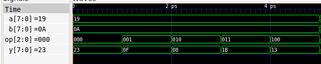
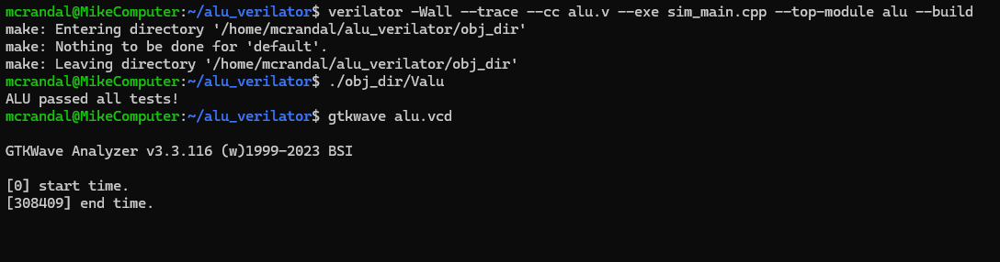

Verilator ALU Simulation
An 8-bit arithmetic logic unit written in Verilog and verified with a C++ testbench in Verilator. The testbench runs every signed 8-bit input pair through all five operations, 327,680 cases in total, and checks each result against a C++ reference.

The design
The ALU takes two 8-bit signed inputs, a and b, and a
3-bit opcode, op, and produces an 8-bit signed result, y.
Results wrap around at 8 bits, as they would in hardware.
000ADD:a + b001SUB:a - b010AND:a & b011OR:a | b100XOR:a ^ b101to111are reserved and output 0
Verification
Instead of a hand-picked set of test vectors, the testbench is exhaustive:
256 values of a times 256 values of b times 5 operations
gives 327,680 cases. Each expected value is computed in C++ with matching 8-bit
wraparound, and any mismatch is reported with the inputs that caused it.
To keep the waveform file small, the testbench records only a sample of the steps, plus a short demo sequence at the start that is always recorded.
Running it
Build with Verilator, run the testbench, and open the waveform in GTKWave. The full steps are in the repository README.

What I learned
This was the first project combining a Verilog module with a C++ testbench. I use Verilog to write the ALU module and then used Verilator to compile and test it. Due to the fact that I only used 8-bit inputs, I decided to exhaustively test all of the operations instead of picking test vectors.
During the process, I learned how to model 8-bit signed integers in C++ so the overflow matches the simulated hardware. To keep the waveform small, I only dumped a sample of steps and a short demo in GTKWave.